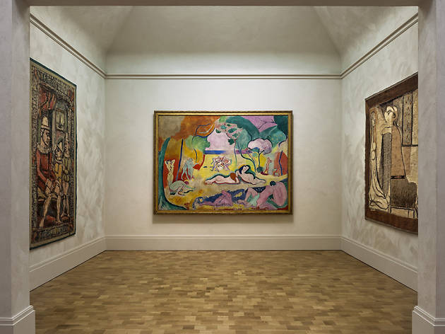
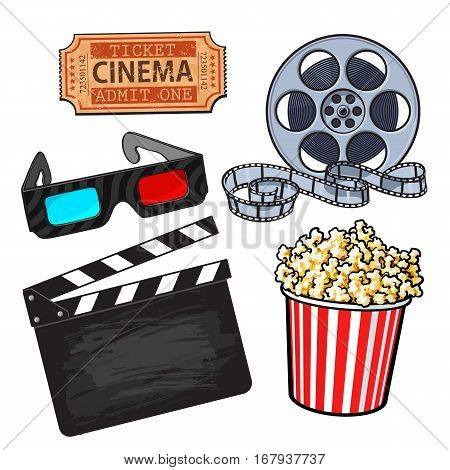

The only Section that will provide you the best in Arts, Music, Movie and Dining.
 The nature of art has been described by philosopher Richard Wollheim as "one of the most elusive of the traditional problems of human culture". Art has been defined as a vehicle for the expression or communication of emotions and ideas, a means for exploring and appreciating formal elements for their own sake, and as mimesis or representation. The three classical branches of art are painting, sculpture and architecture. Music, theatre, film, dance, and other performing arts, as well as literature and other media such as interactive media, are included in a broader definition of the arts. Until the 17th century, art referred to any skill or mastery and was not differentiated from crafts or sciences. In modern usage after the 17th century, where aesthetic considerations are paramount, the fine arts are separated and distinguished from acquired skills in general, such as the decorative or applied arts.For more about art and where to go view and enjoy them click HERE.
 Music is composed and performed for many purposes, ranging from aesthetic pleasure, religious or ceremonial purposes, or as an entertainment product for the marketplace. When music was only available through
sheet music scores, such as during the Classical and Romantic eras, music lovers would buy the sheet music of their favourite pieces and songs so that they could perform them at home on the piano. With the advent of sound recording, records
of popular songs, rather than sheet music became the dominant way that music lovers would enjoy their favourite songs. With the advent of home tape recorders in the 1980s and digital music in the 1990s, music lovers could make tapes or playlists
of their favourite songs and take them with them on a portable cassette player or MP3 player. Some music lovers create mix tapes of their favorite songs, which serve as a "self-portrait, a gesture of friendship, prescription for an ideal party...
an environment consisting solely of what is most ardently loved".For more about music and where to go listen to the latest music click HERE.
Music is composed and performed for many purposes, ranging from aesthetic pleasure, religious or ceremonial purposes, or as an entertainment product for the marketplace. When music was only available through
sheet music scores, such as during the Classical and Romantic eras, music lovers would buy the sheet music of their favourite pieces and songs so that they could perform them at home on the piano. With the advent of sound recording, records
of popular songs, rather than sheet music became the dominant way that music lovers would enjoy their favourite songs. With the advent of home tape recorders in the 1980s and digital music in the 1990s, music lovers could make tapes or playlists
of their favourite songs and take them with them on a portable cassette player or MP3 player. Some music lovers create mix tapes of their favorite songs, which serve as a "self-portrait, a gesture of friendship, prescription for an ideal party...
an environment consisting solely of what is most ardently loved".For more about music and where to go listen to the latest music click HERE.
Films are cultural artifacts created by specific cultures. They reflect those cultures, and, in turn, affect them. Film is considered to be an important art form, a source of popular entertainment, and a powerful medium for educating—or indoctrinating—citizens. The visual basis of film gives it a universal power of communication. Some films have become popular worldwide attractions through the use of dubbing or subtitles to translate the dialog into other languages.The making and showing of motion pictures became a source of profit almost as soon as the process was invented. Upon seeing how successful their new invention, and its product, was in their native France, the Lumières quickly set about touring the Continent to exhibit the first films privately to royalty and publicly to the masses. For more about movies and where to go watch and enjoy them click HERE.
Restaurants range from inexpensive and informal lunching or dining places catering to people working nearby, with modest food served in simple settings at low prices, to expensive establishments serving refined food and fine wines in a formal setting. In the former case, customers usually wear casual clothing. In the latter case, depending on culture and local traditions, customers might wear semi-casual, semi-formal or formal wear. Typically, at mid- to high-priced restaurants, customers sit at tables, their orders are taken by a waiter, who brings the food when it is ready. After eating, the customers then pay the bill. In some restaurants, such as workplace cafeterias, there are no waiters; the customers use trays, on which they place cold items that they select from a refrigerated container and hot items which they request from cooks, and then they pay a cashier before they sit down. Another restaurant approach which uses few waiters is the buffet restaurant. Customers serve food onto their own plates and then pay at the end of the meal. Buffet restaurants typically still have waiters to serve drinks and alcoholic beverages. For more about dining and where to go to enjoy delicious cuisine click HERE.
For more Questions Contact Us HERE
Back To TopCopyright © 1999-2020 by JayStreetDesigns. All Rights Reserved.